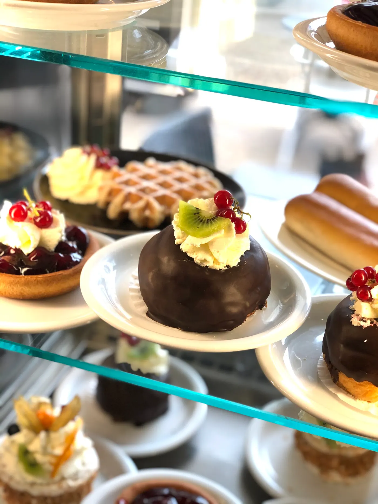

Huisgemaakt gebak
Veel mensen kennen de Carrousel van ons heerlijke huisgemaakte progresgebak. Elke ochtend vullen wij onze gebaksvitrine met deze huisgemaakte progresgebakjes. Maar wist je dat wij de rest van ons gebak ook zelf maken? Dit varieert van chocoladebollen tot kersenvlaaitjes, vruchtenvlaaitjes en nog veel meer.